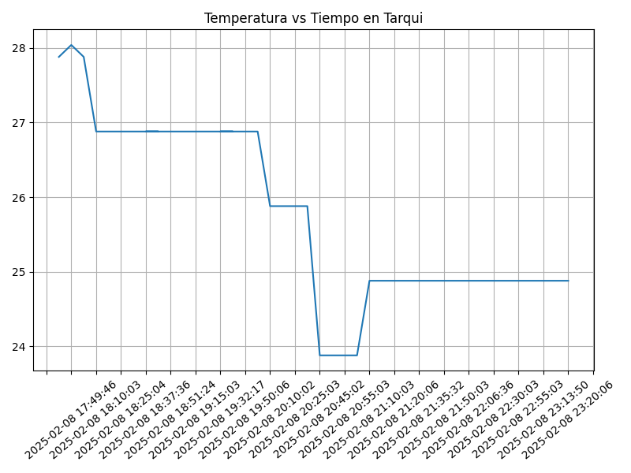
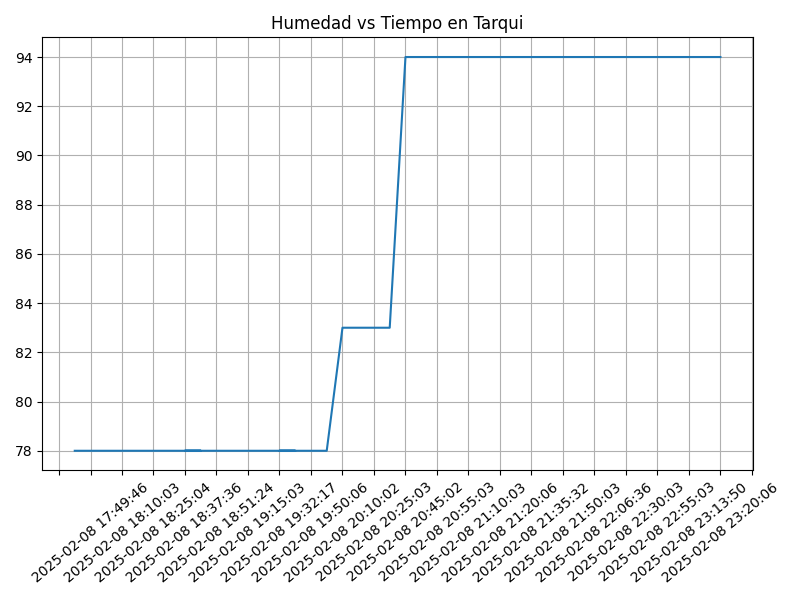
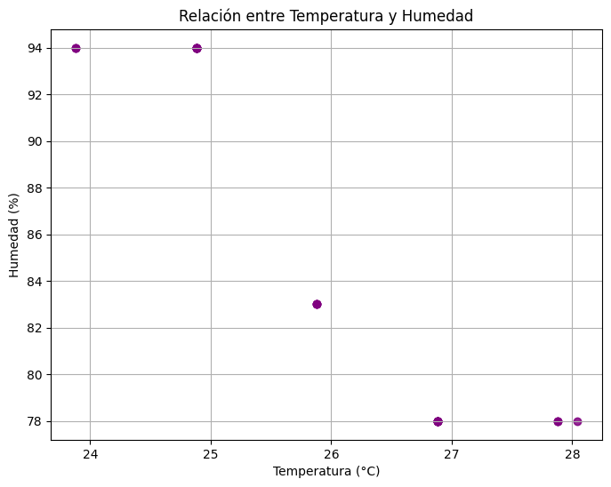
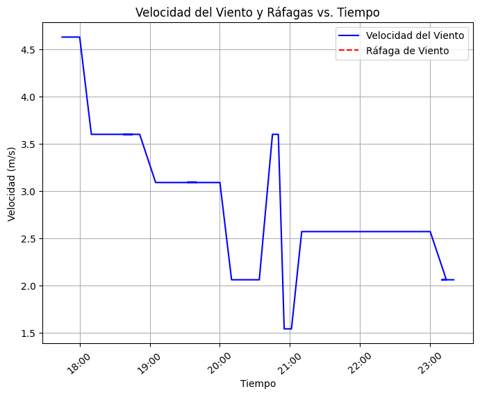
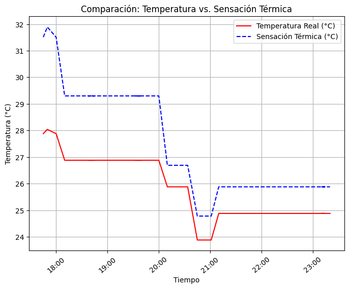
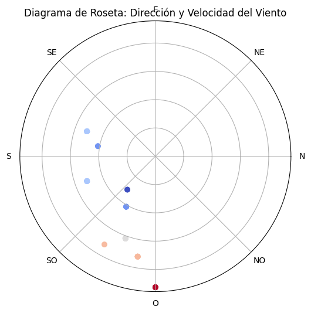

Proyecto ICCD332 Arquitectura de Computadores
Índice
- 1. City Weather APP
- 2. Presentación de resultados
- 2.1. Muestra Aleatoria de datos
- 2.2. Gráfica Temperatura vs Tiempo
- 2.3. Realice una gráfica de Humedad con respecto al tiempo
- 2.4. Diagrama de dispersion entre la temperatura y la humedad
- 2.5. Diagrama viento vs tiempo
- 2.6. Diagrama Temperatura vs sensacion termica
- 2.7. Diagrama de roseta de la direccion del viento
- 3. Referencias
1. City Weather APP
Este es el proyecto de fin de semestre en donde se pretende demostrar las destrezas obtenidas durante el transcurso de la asignatura de Arquitectura de Computadores.
- Conocimientos de sistema operativo Linux
- Conocimientos de Emacs/Jupyter
- Configuración de Entorno para Data Science con Mamba/Anaconda
- Literate Programming
1.1. Estructura del proyecto
Se recomienda que el proyecto se cree en el home del sistema operativo i.e. home/<user>. Allí se creará la carpeta CityWeather
cd cd CityWeather pwd
/home/danielmenendez/CityWeather
El proyecto ha de tener los siguientes archivos y subdirectorios. Adaptar los nombres de los archivos según las ciudades específicas del grupo.
.
├── CityTemperatureAnalysis.ipynb
├── CityTemperatureAnalysis.ipynb:Zone.Identifier
├── clima-manta-hoy-etl.csv
├── clima-manta-hoy.csv
├── get-weather.sh
├── main.py
├── main.py~
├── output.log
└── weather-site
├── build-site.el
├── build-site.el~
├── build.sh
├── build.sh~
├── content
│ ├── #index.org#
│ ├── clima-manta-hoy.csv
│ ├── images
│ │ ├── Humedad.png
│ │ ├── clouds_histogram.png
│ │ ├── direccion_viento.png
│ │ ├── sensacion_termica.png
│ │ ├── temperatura_humedad.png
│ │ ├── temperature.pdf
│ │ ├── temperature.png
│ │ └── velocidad_viento.png
│ ├── index.org
│ ├── index.org:Zone.Identifier
│ └── index.org~
└── public
├── images
│ ├── Humedad.png
│ ├── clouds_histogram.png
│ ├── direccion_viento.png
│ ├── sensacion_termica.png
│ ├── temperatura_humedad.png
│ ├── temperature.pdf
│ ├── temperature.png
│ └── velocidad_viento.png
├── index.html
├── styles.css
└── styles.css~
6 directories, 36 files
1.2. Formulación del Problema
Se desea realizar un registro climatológico de una ciudad \(\mathcal{C}\). Para esto, escriba un script de Python/Java que permita obtener datos climatológicos desde el API de openweathermap. El API hace uso de los valores de latitud \(x\) y longitud \(y\) de la ciudad \(\mathcal{C}\) para devolver los valores actuales a un tiempo \(t\).
Los resultados obtenidos de la consulta al API se escriben en un archivo clima-<ciudad>-hoy.csv. Cada ejecución del script debe almacenar nuevos datos en el archivo. Utilice crontab y sus conocimientos de Linux y Programación para obtener datos del API de openweathermap con una periodicidad de 15 minutos mediante la ejecución de un archivo ejecutable denominado get-weather.sh. Obtenga al menos 50 datos. Verifique los resultados. Todas las operaciones se realizan en Linux o en el WSL. Las etapas del problema se subdividen en:
- Conformar los grupos de 2 estudiantes y definir la ciudad objeto de estudio.
- Crear su API gratuito en openweathermap
- Escribir un script en Python/Java que realice la consulta al API y escriba los resultados en clima-<ciudad>-hoy.csv. El archivo ha de contener toda la información que se obtiene del API en columnas. Se debe observar que los datos sobre lluvia (rain) y nieve (snow) se dan a veces si existe el fenómeno.
Desarrollar un ejecutable get-weather.sh para ejecutar el programa Python/Java.1
- Configurar Crontab para la adquisición de datos. Escriba el comando configurado. Respalde la ejecución de crontab en un archivo output.log
Realizar la presentación del Trabajo utilizando la generación del sitio web por medio de Emacs. Para esto es necesario crear la carpeta weather-site dentro del proyecto. Puede ajustar el look and feel según sus preferencias. El servidor a usar es el simple-httpd integrado en Emacs que debe ser instalado:
- Usando comandos Emacs:
M-x package-installpresionamos enter (i.e. RET) y escribimos el nombre del paquete: simple-httpd - Configurando el archivo init.el
(use-package simple-httpd :ensure t)
Instrucciones de sobre la creación del sitio web se tiene en el vídeo de instrucciones y en el archivo Org-Website.org en el GitHub del curso
- Usando comandos Emacs:
- Su código debe estar respaldado en GitHub/BitBucket, la dirección será remitida en la contestación de la tarea
1.3. Descripción del código
En esta sección se detallan segmentos importantes del código desarrollado y la estrategia de solución adoptada.
El código obtiene datos climatológicos de la ciudad de Manta, Ecuador usando el API de OpenWeatherMap, los procesa y los almacena en un archivo CSV.
1.4. Lectura del API
Se realiza una solicitud HTTP al API de OpenWeatherMap para obtener datos del clima actual.
import requests API_KEY = "bcbbf1a86a6259f5146814204883582b" LAT = -0.95 # 📍 Latitud de Manta LON = -80.7333 # 📍 Longitud de Manta url = f"http://api.openweathermap.org/data/2.5/weather?lat={LAT}&lon={LON}&appid={API_KEY}&units=metric" response = requests.get(url) data = response.json() if response.status_code != 200: print(f"❌ ERROR: No se pudo obtener datos. Código {data.get('cod')}: {data.get('message')}") exit(1) print("✅ Datos obtenidos con éxito")
✅ Datos obtenidos con éxito
1.5. Conversión de JSON a Diccionario en Python
Los datos obtenidos en formato JSON se convierten en un diccionario de Python para facilitar su manipulación.
weather_data = { "dt": data['dt'], "main_temp": data['main']['temp'], "main_feels_like": data['main']['feels_like'], "main_temp_min": data['main']['temp_min'], "main_temp_max": data['main']['temp_max'], "main_humidity": data['main']['humidity'], "wind_speed": data['wind']['speed'], "weather_0_description": data['weather'][0]['description'], "sys_sunrise": data['sys']['sunrise'], "sys_sunset": data['sys']['sunset'] } print(weather_data)
{'dt': 1739075076, 'main_temp': 24.88, 'main_feels_like': 25.88, 'main_temp_min': 24.88, 'main_temp_max': 24.88, 'main_humidity': 94, 'wind_speed': 2.06, 'weather_0_description': 'light rain', 'sys_sunrise': 1739014364, 'sys_sunset': 1739058097}
1.6. Guardado de datos en CSV
Los datos climatológicos se almacenan en un archivo CSV para su posterior análisis.
import csv import os csv_file = "clima-manta-hoy.csv" file_exists = os.path.isfile(csv_file) with open(csv_file, mode="a", newline="", encoding="utf-8") as file: writer = csv.DictWriter(file, fieldnames=weather_data.keys()) if not file_exists: writer.writeheader() writer.writerow(weather_data) print(f"✅ Datos guardados en {csv_file}")
✅ Datos guardados en clima-manta-hoy.csv
1.7. Script ejecutable en Shell
Se proporciona un script para ejecutar el código en el entorno de anaconda/mamba denominado danielmenendez.
#!/usr/bin/sh source /home/danielmenendez/miniforge3/etc/profile.d/conda.sh eval "$(conda shell.bash hook)" conda activate danielmenendez python main.py
Finalmente, hacer ejecutable el script con:
chmod +x ejecutar.sh ./ejecutar.sh
1.8. Configuración de Crontab
Se indica la configuración realizada en crontab para la adquisición de datos
*/5 * * * * cd CityWeather && ./get-weather.sh >> output.log 2>&1
2. Presentación de resultados
2.1. Muestra Aleatoria de datos
Presentar una muestra de 10 valores aleatorios de los datos obtenidos.
import os import pandas as pd # lectura del archivo csv obtenido df = pd.read_csv('/home/danielmenendez/CityWeather/clima-manta-hoy-etl.csv') # se imprime la estructura del dataframe en forma de filas x columnas print(df.shape)
(71, 30)
Resultado del número de filas y columnas leídos del archivo csv
TABLA CON DATOS OBTENIDOS AL AZAR
import pandas as pd table1 = df.sample(10) # Convertir el DataFrame a HTML tabla_html = table1.to_html(index=False, border=1) # Envolver la tabla en un contenedor con la clase table-container tabla_final = f'<div class="table-container">{tabla_html}</div>' print(tabla_final)
| dt | coord_lon | coord_lat | weather_0_id | weather_0_main | weather_0_description | weather_0_icon | base | main_temp | main_feels_like | main_temp_min | main_temp_max | main_pressure | main_humidity | main_sea_level | main_grnd_level | visibility | wind_speed | wind_deg | wind_gust | clouds_all | sys_type | sys_id | sys_country | sys_sunrise | sys_sunset | timezone | id | name | cod |
|---|---|---|---|---|---|---|---|---|---|---|---|---|---|---|---|---|---|---|---|---|---|---|---|---|---|---|---|---|---|
| 2025-02-08 22:06:36 | -80.7333 | -0.95 | 500 | Rain | light rain | 10n | stations | 24.88 | 25.88 | 24.88 | 24.88 | 1012 | 94 | 1012 | 1008 | 6000 | 2.57 | 160 | NaN | 100 | 1 | 8552 | EC | 2025-02-08 06:32:44 | 2025-02-08 18:41:37 | -18000 | 3650767 | Tarqui | 200 |
| 2025-02-08 18:51:24 | -80.7333 | -0.95 | 500 | Rain | light rain | 10n | stations | 26.88 | 29.30 | 26.88 | 26.88 | 1010 | 78 | 1010 | 1006 | 10000 | 3.60 | 260 | NaN | 75 | 1 | 8552 | EC | 2025-02-08 06:32:44 | 2025-02-08 18:41:37 | -18000 | 3650767 | Tarqui | 200 |
| 2025-02-08 19:40:03 | -80.7333 | -0.95 | 803 | Clouds | broken clouds | 04n | stations | 26.88 | 29.30 | 26.88 | 26.88 | 1011 | 78 | 1011 | 1007 | 10000 | 3.09 | 250 | NaN | 75 | 1 | 8552 | EC | 2025-02-08 06:32:44 | 2025-02-08 18:41:37 | -18000 | 3650767 | Tarqui | 200 |
| 2025-02-08 21:25:06 | -80.7333 | -0.95 | 501 | Rain | moderate rain | 10n | stations | 24.88 | 25.88 | 24.88 | 24.88 | 1012 | 94 | 1012 | 1008 | 4000 | 2.57 | 200 | NaN | 75 | 1 | 8552 | EC | 2025-02-08 06:32:44 | 2025-02-08 18:41:37 | -18000 | 3650767 | Tarqui | 200 |
| 2025-02-08 21:50:03 | -80.7333 | -0.95 | 501 | Rain | moderate rain | 10n | stations | 24.88 | 25.88 | 24.88 | 24.88 | 1013 | 94 | 1013 | 1009 | 4000 | 2.57 | 200 | NaN | 75 | 1 | 8552 | EC | 2025-02-08 06:32:44 | 2025-02-08 18:41:37 | -18000 | 3650767 | Tarqui | 200 |
| 2025-02-08 22:40:03 | -80.7333 | -0.95 | 500 | Rain | light rain | 10n | stations | 24.88 | 25.88 | 24.88 | 24.88 | 1013 | 94 | 1013 | 1009 | 6000 | 2.57 | 160 | NaN | 100 | 1 | 8552 | EC | 2025-02-08 06:32:44 | 2025-02-08 18:41:37 | -18000 | 3650767 | Tarqui | 200 |
| 2025-02-08 22:40:03 | -80.7333 | -0.95 | 500 | Rain | light rain | 10n | stations | 24.88 | 25.88 | 24.88 | 24.88 | 1013 | 94 | 1013 | 1009 | 6000 | 2.57 | 160 | NaN | 100 | 1 | 8552 | EC | 2025-02-08 06:32:44 | 2025-02-08 18:41:37 | -18000 | 3650767 | Tarqui | 200 |
| 2025-02-08 17:45:03 | -80.7333 | -0.95 | 803 | Clouds | broken clouds | 04d | stations | 27.88 | 31.51 | 27.88 | 27.88 | 1009 | 78 | 1009 | 1005 | 10000 | 4.63 | 270 | NaN | 75 | 1 | 8552 | EC | 2025-02-08 06:32:44 | 2025-02-08 18:41:37 | -18000 | 3650767 | Tarqui | 200 |
| 2025-02-08 17:45:03 | -80.7333 | -0.95 | 803 | Clouds | broken clouds | 04d | stations | 27.88 | 31.51 | 27.88 | 27.88 | 1009 | 78 | 1009 | 1005 | 10000 | 4.63 | 270 | NaN | 75 | 1 | 8552 | EC | 2025-02-08 06:32:44 | 2025-02-08 18:41:37 | -18000 | 3650767 | Tarqui | 200 |
| 2025-02-08 23:13:50 | -80.7333 | -0.95 | 500 | Rain | light rain | 10n | stations | 24.88 | 25.88 | 24.88 | 24.88 | 1013 | 94 | 1013 | 1009 | 8000 | 2.06 | 170 | NaN | 100 | 1 | 8552 | EC | 2025-02-08 06:32:44 | 2025-02-08 18:41:37 | -18000 | 3650767 | Tarqui | 200 |
2.2. Gráfica Temperatura vs Tiempo
Realizar una gráfica de la Temperatura en el tiempo.
El siguiente cógido permite hacer la gráfica de la temperatura vs
tiempo para Org 9.7+. Para saber que versión dispone puede ejecutar
M-x org-version
import matplotlib.pyplot as plt import matplotlib.dates as mdates # Define el tamaño de la figura de salida fig = plt.figure(figsize=(8,6)) plt.plot(df['dt'], df['main_temp']) # dibuja las variables dt y temperatura # ajuste para presentacion de fechas en la imagen plt.gca().xaxis.set_major_locator(mdates.DayLocator(interval=2)) # plt.gca().xaxis.set_major_formatter(mdates.DateFormatter('%Y-%m-%d')) plt.grid() # Titulo que obtiene el nombre de la ciudad del DataFrame plt.title(f'Temperatura vs Tiempo en {next(iter(set(df.name)))}') plt.xticks(rotation=40) # rotación de las etiquetas 40° fig.tight_layout() fname = 'images/temperature.png' plt.savefig(fname) fname

2.3. Realice una gráfica de Humedad con respecto al tiempo
import matplotlib.pyplot as plt import matplotlib.dates as mdates # Define el tamaño de la figura de salida fig = plt.figure(figsize=(8,6)) plt.plot(df['dt'], df['main_humidity']) # dibuja las variables dt y temperatura # ajuste para presentacion de fechas en la imagen plt.gca().xaxis.set_major_locator(mdates.DayLocator(interval=2)) # plt.gca().xaxis.set_major_formatter(mdates.DateFormatter('%Y-%m-%d')) plt.grid() # Titulo que obtiene el nombre de la ciudad del DataFrame plt.title(f'Humedad vs Tiempo en {next(iter(set(df.name)))}') plt.xticks(rotation=40) # rotación de las etiquetas 40° fig.tight_layout() hname = 'images/Humedad.png' plt.savefig(hname) hname

2.4. Diagrama de dispersion entre la temperatura y la humedad
import matplotlib.pyplot as plt import pandas as pd # Convertir datos a formato numérico df['main_temp'] = pd.to_numeric(df['main_temp']) df['main_humidity'] = pd.to_numeric(df['main_humidity']) # Crear figura fig, ax = plt.subplots(figsize=(8,6)) ax.scatter(df['main_temp'], df['main_humidity'], color='purple', alpha=0.6) # Etiquetas ax.set_title("Relación entre Temperatura y Humedad") ax.set_xlabel("Temperatura (°C)") ax.set_ylabel("Humedad (%)") plt.grid() # Guardar la imagen dname = "images/temperatura_humedad.png" plt.savefig(dname, bbox_inches='tight') dname

2.5. Diagrama viento vs tiempo
import matplotlib.pyplot as plt import matplotlib.dates as mdates import pandas as pd # Convertir columnas a numéricas y fechas df['dt'] = pd.to_datetime(df['dt']) df['wind_speed'] = pd.to_numeric(df['wind_speed']) df['wind_gust'] = pd.to_numeric(df['wind_gust']) # Crear figura fig, ax = plt.subplots(figsize=(8,6)) ax.plot(df['dt'], df['wind_speed'], label="Velocidad del Viento", color='blue') ax.plot(df['dt'], df['wind_gust'], label="Ráfaga de Viento", linestyle='dashed', color='red') # Formatear el eje X ax.xaxis.set_major_locator(mdates.AutoDateLocator()) ax.xaxis.set_major_formatter(mdates.DateFormatter('%H:%M')) plt.xticks(rotation=40) # Etiquetas ax.set_title('Velocidad del Viento y Ráfagas vs. Tiempo') ax.set_xlabel("Tiempo") ax.set_ylabel("Velocidad (m/s)") plt.legend() plt.grid() # Guardar la imagen rname = "images/velocidad_viento.png" plt.savefig(rname, bbox_inches='tight') rname

2.6. Diagrama Temperatura vs sensacion termica
import matplotlib.pyplot as plt import matplotlib.dates as mdates import pandas as pd # Convertir columnas a tipo numérico y fecha df['dt'] = pd.to_datetime(df['dt']) df['main_temp'] = pd.to_numeric(df['main_temp']) df['main_feels_like'] = pd.to_numeric(df['main_feels_like']) # Crear la figura fig, ax = plt.subplots(figsize=(8,6)) ax.plot(df['dt'], df['main_temp'], label="Temperatura Real (°C)", color="red", linestyle="-") ax.plot(df['dt'], df['main_feels_like'], label="Sensación Térmica (°C)", color="blue", linestyle="dashed") # Formatear el eje X ax.xaxis.set_major_locator(mdates.AutoDateLocator()) ax.xaxis.set_major_formatter(mdates.DateFormatter('%H:%M')) plt.xticks(rotation=40) # Etiquetas y título ax.set_title("Comparación: Temperatura vs. Sensación Térmica") ax.set_xlabel("Tiempo") ax.set_ylabel("Temperatura (°C)") plt.legend() plt.grid() # Guardar la imagen sname = "images/sensacion_termica.png" plt.savefig(sname, bbox_inches='tight') sname

2.7. Diagrama de roseta de la direccion del viento
import matplotlib.pyplot as plt import numpy as np import pandas as pd # Convertir columnas a numéricas df['wind_deg'] = pd.to_numeric(df['wind_deg']) df['wind_speed'] = pd.to_numeric(df['wind_speed']) # Convertir dirección a radianes angles = np.radians(df['wind_deg']) # Crear figura polar fig, ax = plt.subplots(figsize=(8,6), subplot_kw=dict(polar=True)) ax.scatter(angles, df['wind_speed'], c=df['wind_speed'], cmap="coolwarm", alpha=0.75) # Etiquetas ax.set_title("Diagrama de Roseta: Dirección y Velocidad del Viento") ax.set_xticks(np.radians([0, 45, 90, 135, 180, 225, 270, 315])) ax.set_xticklabels(["N", "NE", "E", "SE", "S", "SO", "O", "NO"]) ax.set_yticklabels([]) # Guardar la imagen wrname = "images/direccion_viento.png" plt.savefig(wrname, bbox_inches='tight') wrname

cp -rfv ./images/* /home/danielmenendez/CityWeather/weather-site/public/images
3. Referencias
Notas al pie de página:
Recuerde que su máquina ha de disponer de un entorno de anaconda/mamba denominado iccd332 en el cual se dispone del interprete de Python